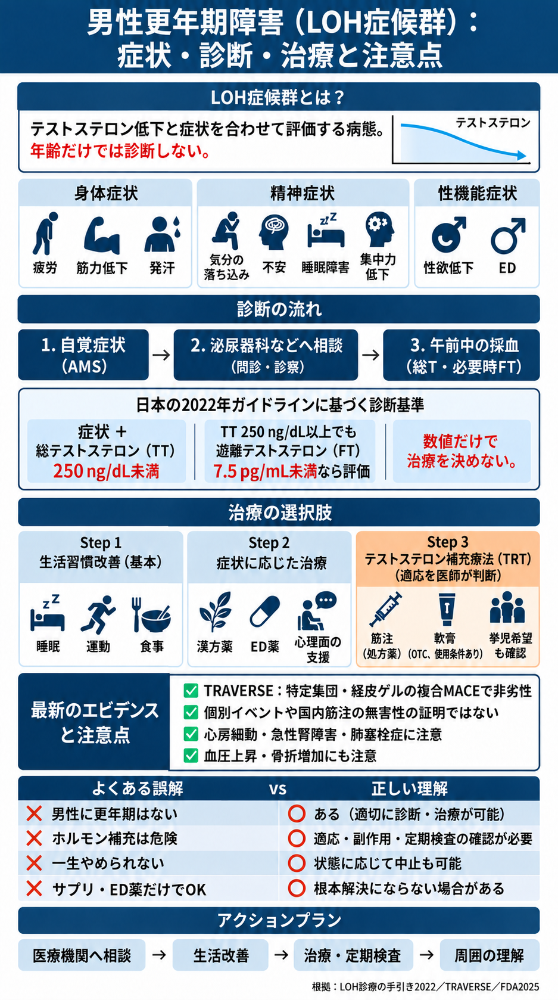
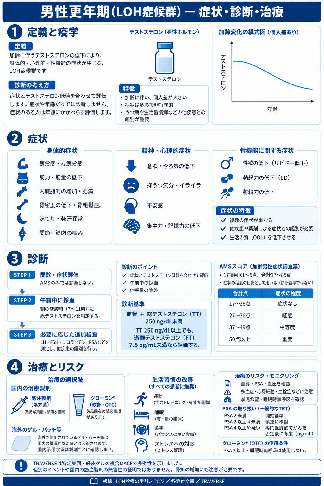

男性更年期・LOH症候群：図解
画像の小さな文字は原寸PNGを開いて拡大してください。
文字による補足
症状と午前中の血液検査を合わせて評価します。国内2022年手引きはTT250ng/dL未満、TT250以上ではFT7.5pg/mL未満を評価します。AMSは17〜26点なし、27〜36軽度、37〜49中等度、50以上重度。一般TRTはPSA2ng/mL未満が開始基準、2以上4未満は慎重検討、4以上等は専門医でがんを否定後に考慮。OTCグローミンはPSA2以上・睡眠時無呼吸で使用しない条件です。TRAVERSEの非劣性は特定集団・経皮ゲルの複合MACEであり、個別イベントや国内筋注の無害性を示しません。心房細動・AKI・肺塞栓症、血圧、骨折に注意します。
図1
症状と検査による評価、国内の診断基準、TRAVERSEの適用範囲と注意点を反映した訂正版です。

図2
AMS区分、国内の診断基準、国内治療と海外製剤、一般TRTとOTCのPSA条件を区別した詳細図です。

根拠と説明
各主張の対象・限界・原典は記事の参考文献と本文を参照してください。図だけで薬剤の開始・変更を判断せず主治医へ相談してください。